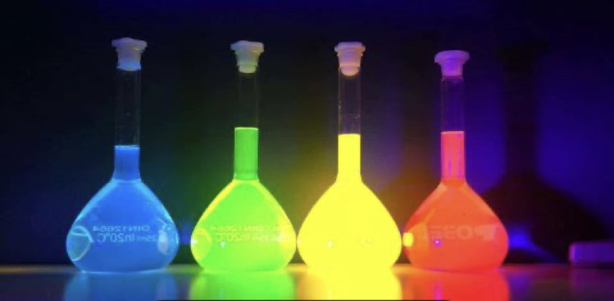

14 Fluorescence et phosphorescence

La luminescence est un terme générique qui englobe la fluorescence et phosphorescence. Il s’agit de la transformation par la matière d’énergie en émission lumineuse. Ce phénomène est connu depuis des siècles : n’avons-nous pas de tout temps été émerveillés par un ballet de lucioles par une belle nuit d’été ?
Ces dernières dizaines d’années, l’utilisation de ce phénomène dans des applications industrielles et de la vie de tous les jours a pris une ampleur considérable, si bien que le contrôle des sources d’approvisionnement et des techniques de productions des matériaux luminescents est devenu un enjeu stratégique majeur, au vu du l’avantage concurrentiel que procure leur maîtrise.
Nous avons tous en tête les feutres fluorescents d’une marque bien connue qui nous servent à surligner des éléments importants d’un texte, mais l’application des matériaux luminescents est bien plus large. Elle va des écrans de haute qualité, aux sources de lumières telles que les ampoules LED ou aux bandes de sécurité nous guidant lors d’évacuation des immeubles en cas d’incendie.
Le thème de ce travail de maturité est d’étudier comment le phénomène de fluorescence ou phosphorescence est utilisé et fonctionne dans une application industrielle donnée ; il s’agira également de traiter les éléments stratégiques, économiques et écologiques qui se cachent derrière la maîtrise de ces matériaux et de leur usage.
Claude-Alain Despland